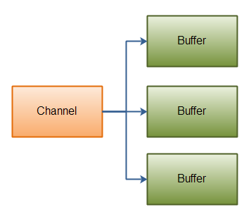

Java NIO 之 Scatter/Gatter¶
Java NIO开始支持scatter/gather， scatter/gather用于描述从Channel（译者注：Channel在中文经常翻译为通道） 中读取或者写入到Channel的操作。
分散（scatter）从Channel中读取是指在读操作时将读取的数据写入多个buffer中。 因此，Channel将从Channel中读取的数据“分散（scatter）”到多个Buffer中。
聚集（gather）写入Channel是指在写操作时将多个buffer的数据写入同一个Channel，因此，Channel 将多个Buffer中的数据“聚集（gather）”后发送到Channel。
scatter/gather经常用于需要将传输的数据分开处理的场合，例如传输一个由消息头和消息体组成的消息，你可能会将消息体和消息头分散到不同的buffer中，这样你可以方便的处理消息头和消息体。
Scattering Reads¶
Scattering Reads是指数据从一个channel读取到多个buffer中。如下图描述：
代码示例如下
ByteBuffer header = ByteBuffer.allocate(128);
ByteBuffer body = ByteBuffer.allocate(1024);
ByteBuffer[] bufferArray = { header, body };
channel.read(bufferArray);
注意buffer首先被插入到数组，然后再将数组作为channel.read() 的输入参数。read()方法按照buffer在数组中的顺序将从channel中读取的数据写入到buffer，当一个buffer被写满后，channel紧接着向另一个buffer中写。
Scattering Reads在移动下一个buffer前，必须填满当前的buffer，这也意味着它不适用于动态消息(译者注：消息大小不固定)。换句话说，如果存在消息头和消息体，消息头必须完成填充（例如 128byte），Scattering Reads才能正常工作。
Gathering Writes¶
Gathering Writes是指数据从多个buffer写入到同一个channel。如下图描述：

ByteBuffer header = ByteBuffer.allocate(128);
ByteBuffer body = ByteBuffer.allocate(1024);
//write data into buffers
ByteBuffer[] bufferArray = { header, body };
channel.write(bufferArray);
buffers数组是write()方法的入参，write()方法会按照buffer在数组中的顺序，将数据写入到channel，注意只有position和limit之间的数据才会被写入。因此，如果一个buffer的容量为128byte，但是仅仅包含58byte的数据，那么这58byte的数据将被写入到channel中。因此与Scattering Reads相反，Gathering Writes能较好的处理动态消息。